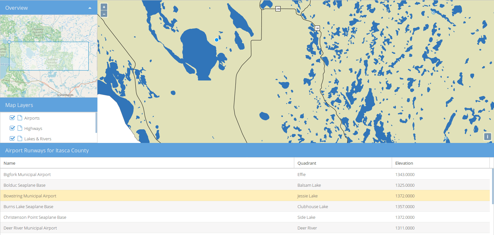

GeoExt gyorstalpaló¶
A GeoExt egy JavaScript könyvtár, mely a böngészőben fut, kombinálja és kiterjeszti az ExtJS keretrendszert és az OpenLayers könyvtárat. Ez a gyorstalpaló egy 200 sor kódból álló gazdag web alkalmazás létrehozását részletezi. Az OSGeoLive-ra telepített MapServer webes szolgáltatásait fogjuk használni a térképi rétegek szolgáltatásához az alkalmazáshoz. Az alábbi lépések befejezése után egy demó GeoExt alkalmazást kapunk a http://localhost/geoext/ címen.
Contents
Egy HTML oldal létrehozása¶
In this step we will set-up an empty HTML page which will contain the application. We’ll use the text editor FeatherPad installed on OSGeoLive to create a new HTML file at /var/www/html/geoext/demo.html
Open FeatherPad from the command line with elevated permissions, so you can save the file, using System Tools > QTerminal and then running run the command below:
sudo featherpad
Next paste in the HTML below, and save the file as
/var/www/html/geoext/demo.html. The file contains links to the ExtJS and OpenLayers JavaScript libraries, and two CSS files used to style ExtJS and OpenLayers components.Az
Ext.Loader``osztályt fogjuk használni a GeoExt JavaScript forrás fájlok betöltéséhez. Ezek mind az ``srcmappában vannak a/var/www/html/geoext/alatt.<!DOCTYPE html> <html> <head> <meta charset="utf-8" /> <title>OSGeoLive | GeoExt QuickStart</title> <link rel="stylesheet" href="resources/theme-triton-all.css" type="text/css" /> <link rel="stylesheet" href="ol.css" type="text/css" /> <script src="ext-all.js"></script> <script src="ol.js"></script> </head> <body> <script> Ext.Loader.setConfig({ enabled: true, paths: { 'GeoExt': 'src/' } }); Ext.onReady(function () { // all JavaScript application code should go here }); </script> </body> </html>
Most egy üres HTML oldalt kell látnia a Firefox-ban a http://localhost/geoext/demo.html címen.
Az összes JavaScriptet a következő fejezetekben az Ext.onReady` függvényben található // all JavaScript application code should go here megjegyzés után kell beilleszteni. A kód ide helyezésével biztosítjuk, hogy a JavaScript könyvtárakat betöltöttük mielőtt bármelyik saját kód lefutna.
OpenLayers objektumok beállítása¶
A következőkben az alkalmazás által használt OpenLayers objektumokat állítjuk be.
Először hozzunk létre egy csempe térkép réteget az OpenStreetMap felhasználásával és néhány WMS réteget az OSGeoLive-ban elérhető MapServer Itasca demóból.
var map; var mapServerUrl = 'http://localhost/cgi-bin/mapserv?map=/usr/local/www/docs_maps/mapserver_demos/itasca/itasca.map&'; var osmLayer = new ol.layer.Tile({ source: new ol.source.OSM(), name: 'OpenStreetMap' }); var wmsLayer1 = new ol.layer.Image({ source: new ol.source.ImageWMS({ url: mapServerUrl, params: { 'LAYERS': 'ctybdpy2' } }), name: 'County Boundary' }); var wmsLayer2 = new ol.layer.Image({ source: new ol.source.ImageWMS({ url: mapServerUrl, params: { 'LAYERS': 'lakespy2' } }), name: 'Lakes & Rivers' }); var wmsLayer3 = new ol.layer.Image({ source: new ol.source.ImageWMS({ url: mapServerUrl, params: { 'LAYERS': 'majrdln3,majrdln3_anno' } }), name: 'Highways' });
A következőkben egy WFS réteget fogunk hozzáadni - ez egy kicsit bonyolultabb, de az előző rétegekhez hasonlóan ugyanazt a megközelítést követjük, egy forrás majd utána egy réteg létrehozása:
var vectorSource = new ol.source.Vector({ format: new ol.format.GeoJSON(), url: function (extent) { return mapServerUrl + 'service=WFS&' + 'version=1.1.0&request=GetFeature&typename=airports&' + 'outputFormat=application/json&srsname=EPSG:3857&' + 'bbox=' + extent.join(',') + ',EPSG:3857'; }, strategy: ol.loadingstrategy.bbox }); var vectorLayer = new ol.layer.Vector({ source: vectorSource, name: 'Airports' });
Most az OpenLayers térkép objektumot hozzuk létre, melyet az éppen létrehozott rétegekkel konfigurálunk. Be fogjuk állítani a térkép középpontját és nagyítási szintjét valamint hozzáadunk egy kiválasztás interakciót, hogy a vektor réteg elemeit ki tudjuk választani.
var map = new ol.Map({ layers: [ wmsLayer1, wmsLayer2, wmsLayer3, vectorLayer ], view: new ol.View({ center: ol.proj.fromLonLat([-93.33, 47.32]), zoom: 6 }) }); var selectInteraction = new ol.interaction.Select(); map.addInteraction(selectInteraction);
Munka a GeoExt komponensekkel¶
Miután a térképet és a rétegeket beállítottuk létre fogjuk hozni és beállítjuk a GeoExt komponenseket.
Mindenek előtt egy
GeoExt.component.Map-et hozunk létre. Ez az általunk létrehozott OpenLayers térképet használja és az alkalmazásunk «center» területére pozicionáljuk.var mapComponent = Ext.create('GeoExt.component.Map', { map: map, region: 'center' });
Ezután egy rétegfa komponenst hozunk létre. A fának van saját adattárolója -
GeoExt.data.store.LayersTree, melyet az OpenLayers térkép rétegeivel töltünk fel. A tárat használjuk majd a fa panel benépesítésére. Egy modult is hozzáadunk a fához, hogy lehetővé tegyük a térképi rétegek sorrendjének megváltoztatását húzással és elengedéssel. Aflextulajdonság miatt a fa panel a képernyő régiójában kitölti az összes rendelkezésre álló helyet.var treeStore = Ext.create('GeoExt.data.store.LayersTree', { layerGroup: map.getLayerGroup() }); var layerTreePanel = Ext.create('Ext.tree.Panel', { title: 'Map Layers', width: 300, flex: 1, store: treeStore, rootVisible: false, viewConfig: { plugins: { ptype: 'treeviewdragdrop' } } });
Egy rács komponenst is létrehozunk a WFS rétegünk attribútumainak megjelenítésére. Hasonlóan a rétegfa tárhoz és fa panelhez, létrehozunk egy
GeoExt.data.store.Featurestárat és egy rács panelt.var featureStore = Ext.create('GeoExt.data.store.Features', { layer: vectorLayer, map: map }); var featureGrid = Ext.create('Ext.grid.Panel', { store: featureStore, region: 'south', title: 'Airport Runways for Itasca County', columns: [ { text: 'Name', dataIndex: 'NAME', flex: 3 }, { text: 'Quadrant', dataIndex: 'QUADNAME', flex: 1 }, { text: 'Elevation', dataIndex: 'ELEVATION', flex: 1 } ], listeners: { selectionchange: function (sm, selected) { Ext.each(selected, function (rec) { selectInteraction.getFeatures().clear(); selectInteraction.getFeatures().push(rec.getFeature()); }); } }, height: 300 });
Az utolsó GeoExt komponensünk egy áttekintő térkép -
GeoExt.component.OverviewMap. Ezt az OpenStreetMap réteg megjelenítésére konfiguráljuk, melyet korábban hoztunk létre és egy ExtJS panelben helyezzük el.var overview = Ext.create('GeoExt.component.OverviewMap', { parentMap: map, layers: [osmLayer] }); var overviewPanel = Ext.create('Ext.panel.Panel', { title: 'Overview', layout: 'fit', items: overview, height: 300, width: 300, collapsible: true });
Nézet létrehozása¶
Az utolsó lépés az alkalmazás létrehozásában egy nézet létrehozása - az alkalmazást reprezentáló konténert, mely az összes általunk létrehozott komponenst megjeleníti.
var vp = Ext.create('Ext.container.Viewport', {
layout: 'border',
items: [
mapComponent,
{
xtype: 'container',
region: 'west',
layout: 'vbox',
collapsible: true,
items: [
overviewPanel,
layerTreePanel
]
},
featureGrid
]
});
Most frissítenie kellene a http://localhost/geoext/demo.html linket a böngészőjében és az alábbi képhez hasonló teljes GeoExt alkalmazást kell látnia.
{kind=link}
Mi a következő?¶
- A GeoExt honlap tartalmazza a teljes API dokumentációt és példákat.
- Egy GeoExt workshop az összes lépést leírja a GeoExt3 konfigurálásához és használatához az ön ExtJS alkalmazásában.
- Az OpenLayers v4.6.5 API doksik
- Az ExtJS 6.2.0 API doksik